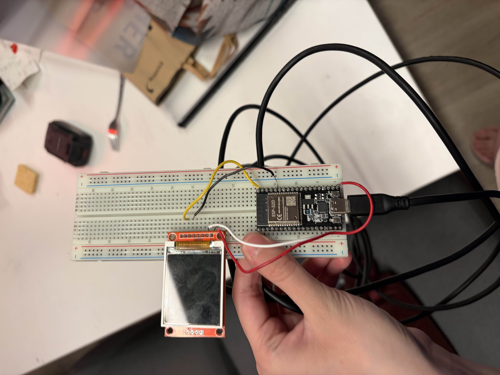
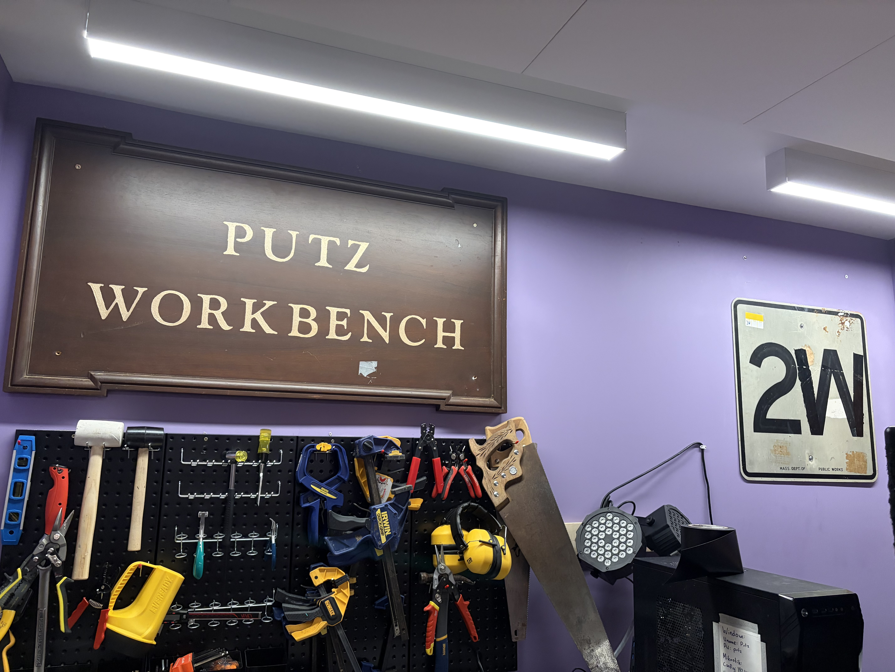
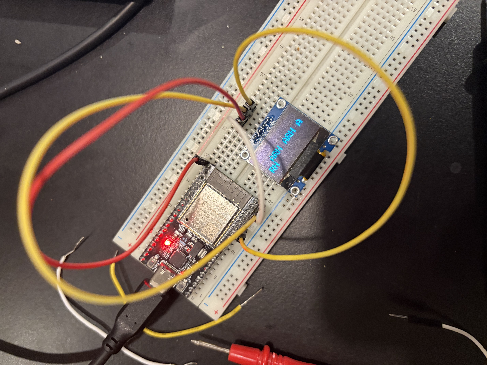
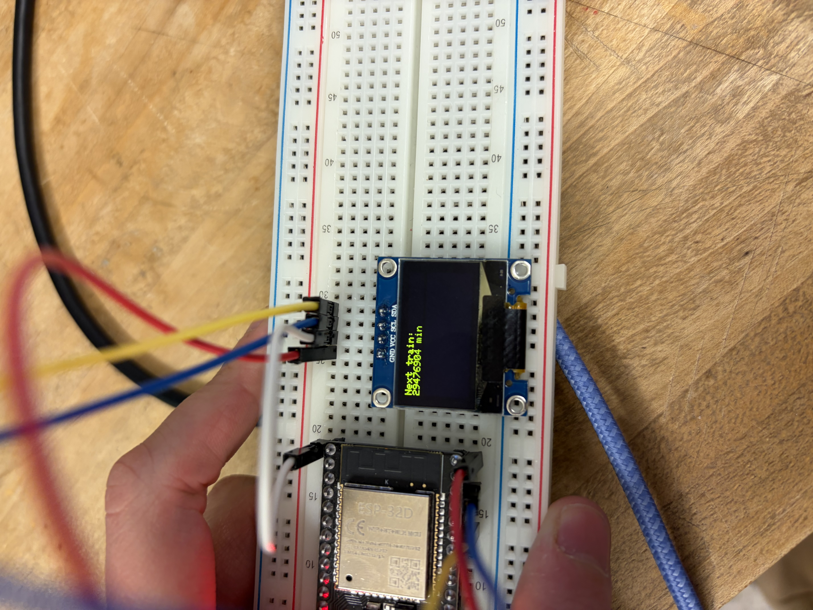
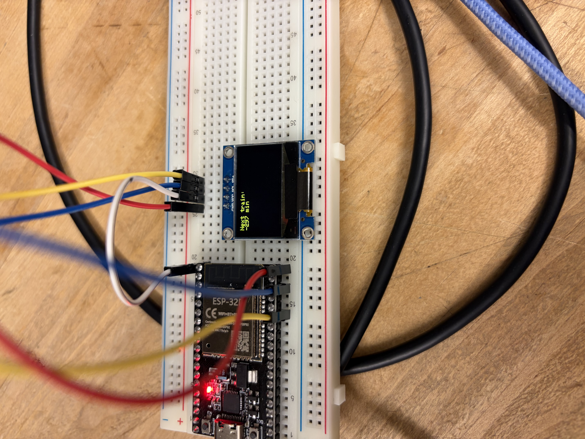
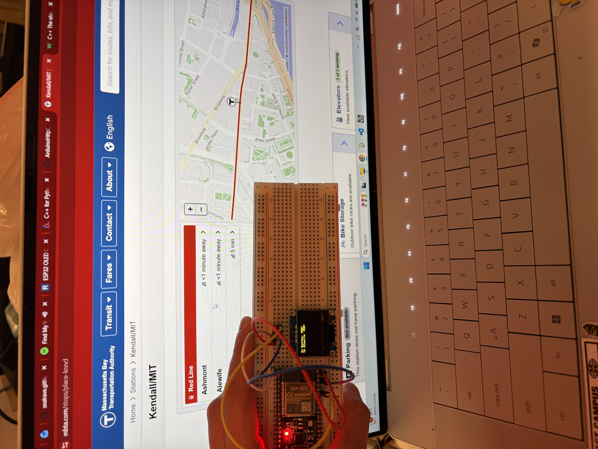

MBTA Tracker
This project was heavily inspired by this video; a few days before getting started, I also learned that you can buy a prettier (for now!) T tracker here but opted to build my own anyway. Here’s what we’re working with:

- Breadboard (from my hallmate and friend Yabi)
- ESP32-D (also from Yabi, who makes me feel like I’m in a video game due to his habit of giving me random electronic components and saying things along the lines of “this could be useful for [insert project]!”)
- Screen (more on that later)
- The MBTA’s V3 API, which provides realtime data on all MBTA routes.
+a bunch of wires from my Putz’s (the name of my dorm hall) workbench.

Anyways. I thought that was out of the question, so I resolved to move my work onto a big screen later and start out with an eight pin OLED display that Yabi gave me. After some initial planning, I started off for real by writing a Python program to fetch information about the Red Line stops closest to my dorm from the V3 API, since I’d be learning C++ as I went along and thought reference code in a language I’m more comfortable with would make it significantly easier. Turns out that C++ is not that hard to pick up; there were a few other things, like getting the ESP32 connected to WiFi, that I expected to be a lot more complicated than they actually ended up being.
I wired everything up and tried to get some simple code displayed on the screen to make sure it was working properly, and this is where things went wrong for a bit. Not only were my attempts to Frankenstein a few online tutorials failing, which I later learned (at 2AM + from Yabi, who had work in the morning) was occurring because I was treating a screen that used SPI like one that used I2C, I also discovered that the screen was likely fried (either from a previous project or by me). I turned to my smallest and last Yabi-gifted screen, a four-pin OLED. Thankfully, I was able to get this one working just fine.

I then rewrote my MBTA script in C++. Aside from the screen, the T shutting down at 2AM and refusing to cough up the data for the morning trains ended up being my biggest bottleneck. After catching a few small bugs in my functions for dealing with time…


...it worked!

What's next:
- Test out the big screen, if it doesn’t work then I’ll rifle through electronics recycling spots at school and pray.
- Make this more useful for Putz! This was originally going to go in my room, but I decided to mount it in a lounge: after all, if my floor is giving me wires, microcontrollers, and 1am lessons on embedded systems communication protocols, the least I can do is help them catch the T on time. So, I have been timing my walks to the T and sent a Google Form to everyone on hall to get their walk times, too, controlling for factors like weather and starting position on hall to estimate the average Putzen walking time. Using this, I can make the screen display the time left to leave hall before missing the train, which seems a lot more helpful than what I currently have.
- Jumping off the previous point, if weather has a significant effect on walking times, I will factor that into the time I display on the screen (and maybe display the weather on there too while I’m at it?). Will report back.
- SEAL TRACKER! Since I am looking for a big screen to display two whole lines of text, I figured I could set aside part of it for a SEAL MAP. I haven’t looked into this too much, but I want to use the data from one of those marine mammal tracking websites to display the realtime locations of seals in Massachusetts or the world. This is because I love seals.
Lastly, here are some resources I found helpful if you’re interested in making a T tracker of your own!
- ESP32 OLED Display with Arduino IDE by Random Nerd Tutorials
- C++ for Python Programmers
- After mentioning him five times in four paragraphs, I feel obligated to link Yabi’s website